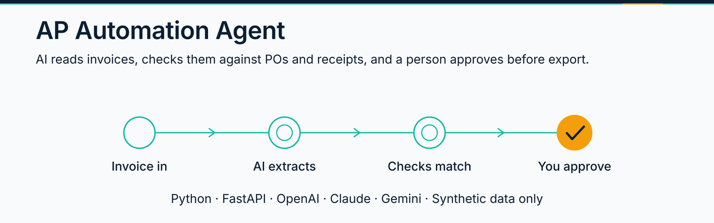

Featured

AP Automation Agent
An AI-assisted accounts payable web app. It extracts fields from invoice PDFs, then runs deterministic checks — schema and math validation, exact and soft duplicate detection, 2-way and 3-way matching to purchase orders and receiving records (tolerance of the greater of $1.00 or 1% of the PO total), and suggested GL coding — and sends every exception to a person. Nothing is exported until a person approves, rejects, or edits the invoice, and every action is written to an audit log. The model never invents a missing amount: an unreadable or absent total is stored as null, flagged, and sent to review. Approved invoices can be exported as a QuickBooks-style CSV.
A swappable LLM provider (mock, Gemini, Claude, or OpenAI) turns text into fields; every check after that is plain Python. The default provider is an offline mock that needs no API key and makes no network calls. The Gemini, Claude, and OpenAI providers are implemented in the repository but have not been run against the live APIs; only the mock is exercised in tests and the eval. All vendors, invoices, and purchase orders in the repository are fictional.
Result 118 tests, all using the mock provider, with ruff and pytest in GitHub Actions on every push and pull request. An eval of the 24 synthetic invoices with the mock provider reports 100% field accuracy, including 2 correct refusals on missing totals and 0 wrong guesses. That figure shows the pipeline and scoring work end to end; it is not a measure of real LLM accuracy, which has not been evaluated here.
- Python
- FastAPI
- Pydantic
- pytest
- Gemini
- OpenAI
- Claude
- Docker Compose
- Human-in-the-loop